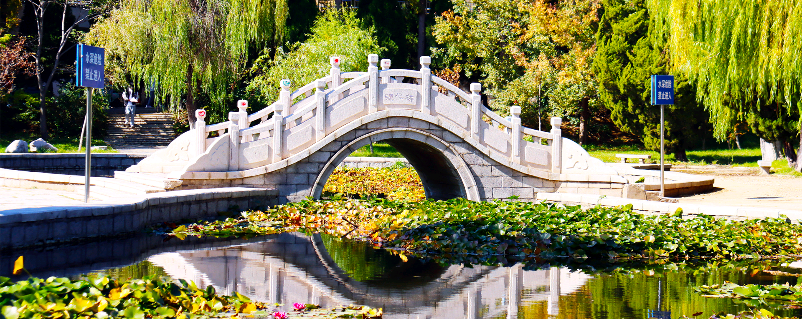
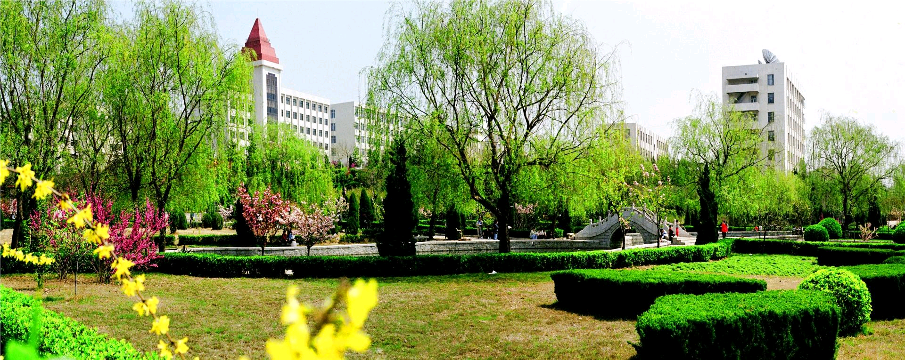
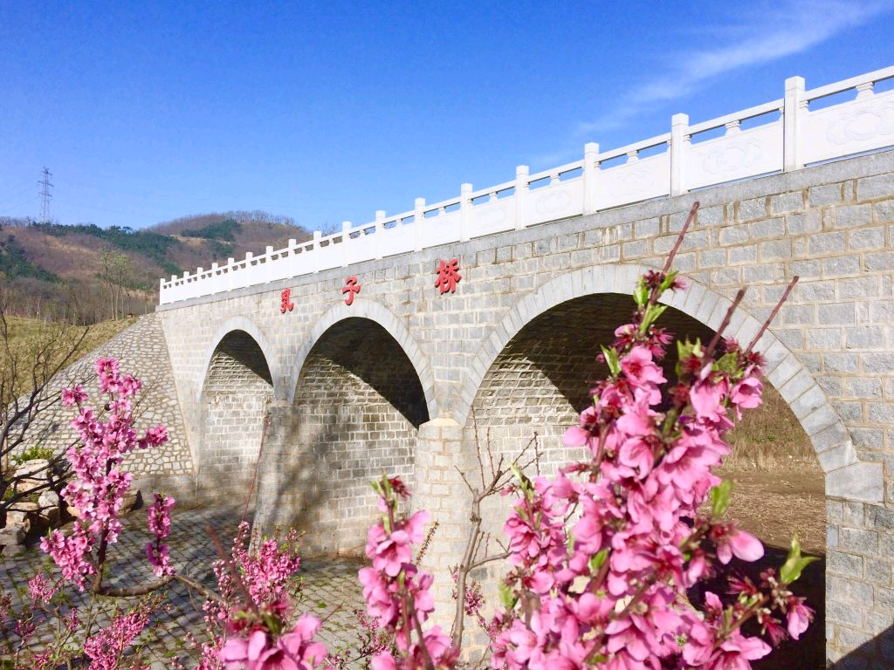

校园的清晨，是被那第一缕阳光轻轻唤醒的。当黎明的曙光划破天际，金色的光辉洒落在校园的每一寸土地上。那葱郁的树木，像是被镀上了一层金边，在微风中轻轻摇曳着枝叶，仿佛在向新的一天致以最诚挚的问候。 沿着校园的小径漫步，脚下是柔软的草地，散发着淡淡的青草香。草丛中，不知名的野花星星点点地绽放着，红的、黄的、紫的，宛如夜空中闪烁的繁星，为这绿色的画卷增添了几分绚丽的色彩。小径两旁的柳树，垂下了长长的枝条，宛如少女的秀发，在风中翩翩起舞。偶尔有几只小鸟在枝头欢快地歌唱，清脆的歌声在校园里回荡，仿佛在诉说着校园的美好。 校园的湖泊，是这自然风光中最璀璨的明珠。湖水清澈见底，宛如一面巨大的镜子，倒映着蓝天白云、绿树红墙。湖面上，几只洁白的天鹅悠闲地游弋着，它们时而低头觅食，时而引吭高歌，为这宁静的湖泊增添了几分生机与活力。湖边的荷花，在夏日的骄阳下竞相开放，粉红的花瓣、碧绿的荷叶，构成了一幅美丽的画卷。微风吹过，荷花轻轻摇曳，散发出阵阵沁人心脾的清香，让人陶醉其中，流连忘返。 到了傍晚，校园的天空被染成了一片绚丽的红色。夕阳的余晖洒在教学楼的屋顶上，洒在操场上，洒在每一个角落，整个校园都被笼罩在一片金色的光辉之中。此时的校园，仿佛变成了一座金色的城堡，散发着神秘而迷人的魅力。夜晚的校园，是宁静而祥和的。月光如水，洒在校园的每一个角落。路灯下，偶尔有几只小虫子在飞舞，为这宁静的夜晚增添了几分灵动的气息。校园的图书馆，灯火通明，宛如一座知识的灯塔，照亮了每一个求知者的前行之路。在这宁静的夜晚，漫步在校园的小路上，感受着微风的轻抚，聆听着夜的声音，让人的心灵得到了前所未有的宁静与慰藉。


